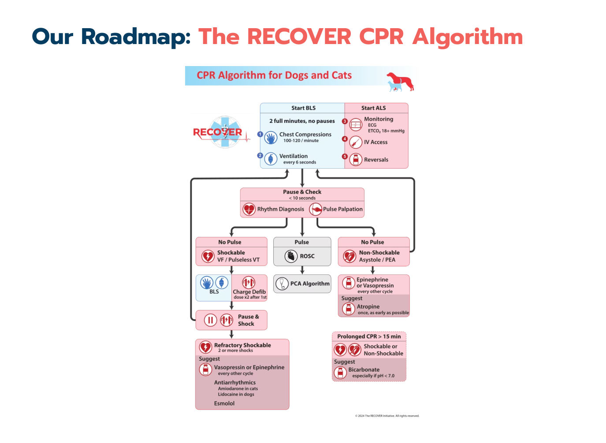
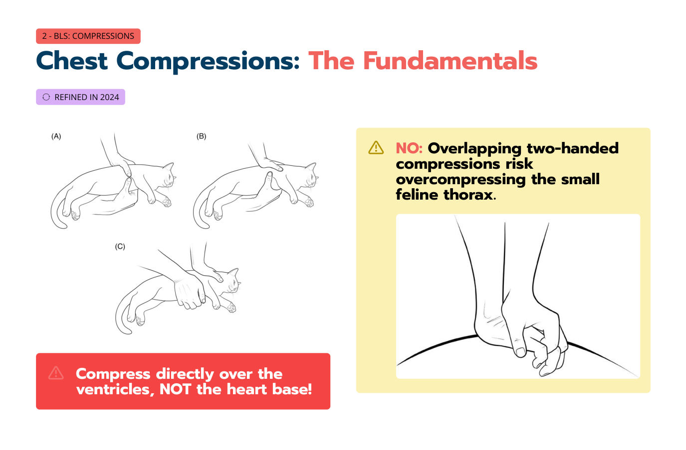

心跳停止的貓：2024 RECOVER CPR 指引改了什麼？
主講：Elise Boller, DVM, DACVECC
TSFM Annual Conference 2026｜Day 1 — The Crashing Cat｜Session 7｜場次 07
目前只有講義，沒有課堂錄音；講義上的影片（Vimeo）與現場投票無法收錄。
⭐ 必記原則
- 2012 → 2024 是演進，不是重新發明：高品質 BLS 的基本原則不變
- 按壓：100–120 次/分、深度胸寬 ⅓–½、完全回彈、每 2 分鐘換人；插管後每 6 秒一次呼吸（10 次/分）
- 貓：直接壓在心室上，不是心基部；有三種可接受的手法；不要雙手交疊按壓（會壓過頭）
- 通氣：潮氣量 約 10 mL/kg、吸氣約 1 秒、PIP < 40 cmH₂O；過度通氣和通氣不足一樣危險
- ETCO₂ ≥ 18 mmHg 是 CPR 品質目標（越高越好）；檢查暫停 < 10 秒
- 不可電擊節律（asystole／PEA）：epinephrine 或 vasopressin 每隔一個循環；高劑量 epinephrine 取消；atropine 0.04 mg/kg 只給一次、越早越好
- 可電擊節律（VF／pVT）：第一次 2 J/kg，之後每次增加 150%、上限 10 J/kg；電擊後立刻恢復按壓；難治時貓用 amiodarone（狗用 lidocaine）
- 停止按壓確認 ROSC：ETCO₂ 上升 ≥ 10 到 ≥ 35 mmHg ＋ 摸得到脈搏；麻醉相關的停止存活出院機率高 15 倍，貓比狗高 5 倍——不要輕易放棄
RECOVER 計畫與病例 Pickles
▾RECOVER 計畫（Reassessment Campaign on Veterinary Resuscitation）
研究
- 評估並推進獸醫 CPR 的證據
指引
- 把證據轉成實證臨床建議
教育
- 讓 CPR 知識容易取得、能用在臨床
訓練
- 標準化 CPR 訓練與認證——全球超過 80,000 人
利益揭露：講者是 RECOVER 的顧問；配偶 Dr. Manu Boller 是 RECOVER 共同創辦人。
2012 → 2024：演進，不是重新發明
不變
- 高品質 BLS 的基本原則仍然有效
改變
- 依新證據做的一組重點更新
貓專屬
- 小型病患的按壓技巧與生理回饋
路線圖：RECOVER CPR 流程

Pickles：一個非常糟的早上
- 嚴重急性呼吸窘迫；入院後不久失去反應，出現瀕死呼吸（agonal breathing）
- 沒有過去病史，室內外都會去的貓
- 你會怎麼做？（複選，含幾個搞笑選項）：① 拚命找房間裡「更大人的大人」② 大聲求救並立刻開始胸外按壓 ③ 短暫懷疑自己所有的職涯決定 ④ 先夾血氧機、量血壓
1. BLS：胸外按壓
▾基本原則（不變）
| 項目 | 內容 |
|---|---|
| 位置 | 壓在心臟上方*（依體型，見下） |
| 速率 | 100–120 次/分 |
| 深度 | 胸寬的 ⅓–½ |
| 回彈 | 完全回彈，不要靠在胸上 |
| 換手 | 每 2 分鐘 |
| 通氣 | 每 6 秒一次呼吸 |
2024 修正：貓的按壓

- 直接壓在心室上，不是心基部！
- ❌ 雙手交疊按壓容易把貓的小胸腔壓過頭（受傷風險）
- 貓和小型犬：現在支持三種手法（圖 A–C，側躺；以單手或雙手從胸側按壓）
依體型選位置（不變）
| 體型 | 位置 | 機轉 |
|---|---|---|
| 大型圓胸犬 | 胸部最寬處 | 胸泵 |
| 大型深胸（龍骨胸）犬 | 直接在心臟上方 | 心泵 |
| 扁胸／短吻犬 | 仰躺，壓胸骨 | |
| 貓與小型犬 | 三種手法（見上） | 💡 心泵為主 |
按壓者的姿勢（不變）
- 站在動物背側（脊椎那一側）
- 用體重，不是手臂的力量（手肘打直）
- 每 2 分鐘換人（疲勞會讓品質下降，自己卻感覺不出來）
2. BLS：呼吸道與通氣
▾| 項目 | 內容 | |
|---|---|---|
| 不變 | 盡快插管 | 側躺插管；插管前按壓：通氣 30 : 2 |
| 10 次/分 | 插管後按壓與通氣同時進行，每 6 秒一次 | |
| 2024 修正 | 潮氣量與壓力 | 約 10 mL/kg、吸氣時間約 1 秒、PIP < 40 cmH₂O；用能看到胸部起伏的最低壓力 |
| 停止時接著呼吸器 | 改成手動通氣。若一定要用呼吸器：PIP ≤ 60 cmH₂O，不要過度通氣 | |
| 沒插管 | 密合面罩＋手動甦醒球優於口對鼻 |
Pickles：BLS 進行中——這些按壓哪裡錯了？
講義為照片／影片題（無法收錄）。💡 對照上面原則檢查：位置是否在心室上、是否雙手交疊、速率與深度、有沒有完全回彈、按壓者是否靠在胸上。
3. ALS：監測與拮抗劑
▾不只是監測：用數據來優化
| 監測 | 說明 | |
|---|---|---|
| 不變 | SpO₂ 與間接血壓 | CPR 時沒用——要有脈搏才會有讀值 |
| ECG | 診斷停止的節律、指引用藥 | |
| ETCO₂ 突然持續上升 | ROSC 的早期指標——不要忽略，但要確認有灌流節律（摸脈搏！） | |
| 2024 修正 | ETCO₂ ≥ 18 mmHg | CPR 品質目標 |
| 暫停 < 10 秒 | 節律／脈搏檢查 |
ETCO₂ 不是心輸出量的直接測量——要和其他資料一起解讀。
拮抗劑：不要忘了最明顯的
講義圖片：Flumazenil（benzodiazepine）、Naloxone（鴉片類）、Atipamezole（α₂ 促效劑，如 dexmedetomidine）。
💡 有用過這些藥（尤其麻醉中停止）就立刻給拮抗劑。
Pickles：ETCO₂ 低於 18 mmHg……可以怎麼做？
4. 節律診斷，以及不可電擊節律（Asystole／PEA）
▾心跳停止時的四種節律
| 節律 | 特徵 | 可否電擊 |
|---|---|---|
| Asystole／平線 | 犬貓最常見的停止節律 | 不可 |
| PEA（無脈搏電氣活動） | ECG 有規則波形＋摸不到脈搏；用觸診確認 | 不可 |
| 心室纖維顫動（VF） | 混亂、無組織 | 可，立刻去顫 |
| 無脈搏心室頻脈（pVT） | 快速、寬 QRS、規則 | 可，處理同 VF |
升壓劑：改了什麼
2012
- 低劑量 epinephrine 和／或 vasopressin，每隔一個 BLS 循環
- 停止時間長（> 10 分鐘）：考慮高劑量 epinephrine
2024
- Epinephrine 或 vasopressin，每隔一個循環；兩者都可
- 高劑量 epinephrine 取消：會提高 ROSC，但神經預後與停止後存活變差
💡 講義沒有列劑量；RECOVER 常用低劑量 epinephrine 0.01 mg/kg IV/IO、vasopressin 0.8 U/kg IV/IO。
Atropine：一次、早給，不重複
- 2012：每隔一個 BLS 循環考慮 atropine，整個急救過程重複給
- 2024：不可電擊節律＋懷疑迷走神經張力高時；0.04 mg/kg IV 或 IO；只給一次、越早越好、絕不重複
Pickles 第一次 ECG 檢查
監視器上是規則的 QRS 波形（約 142 次/分），但摸不到脈搏、ETCO₂ 低——節律診斷？怎麼處理？
5. 可電擊節律（VF／pVT）與難治型
▾電擊 → 恢復 → 再評估
- 在 ECG 上辨認 VF／pVT
- 充電時繼續 BLS
- 暫停 → 喊「離開」→ 電擊
- 立刻恢復按壓
- 完成 2 分鐘 CPR 循環
- 節律檢查——暫停 < 10 秒
- 仍可電擊？→ 提高能量
去顫：2024 改變
| 2012 | 2024 | |
|---|---|---|
| 第 1 次 | 標準起始能量 | 2 J/kg |
| 第 2 次以後 | 同樣能量重複，只有 VF 持續很久才提高 | 每次增加 150% |
| 上限 | 10 J/kg |
理由：重複相同能量的電擊效果會遞減，所以從第二次就開始升高。
講義 📄 31 寫「持續 VF/pVT：4 J/kg」，流程圖寫「第一次之後劑量 ×2」；兩者都表示第二次要提高能量。
難治型 VF／pVT（≥ 2 次電擊）：輔助治療
全部都只是「建議」——證據品質低。BLS 仍是不可妥協的基礎。
| 藥物 | 說明 |
|---|---|
| Vasopressin 或 epinephrine | 每隔一個循環，和不可電擊流程相同；仍然不用高劑量 epinephrine |
| 抗心律不整藥：狗 ≠ 貓 | 狗 → Lidocaine；貓 → Amiodarone |
| Esmolol | 難治 VF 可考慮——可能降低維持顫動的交感驅動 |
| 碳酸氫鈉 | CPR 很久（> 15 分鐘）時考慮，特別是 pH < 7.0 |
💡 貓對 lidocaine 的神經與心血管毒性比較敏感，這是改用 amiodarone 的原因之一。
6. 什麼時候停止按壓（或不要停）？ROSC
▾不要中斷：2024 修正
| 情況 | 可以停止按壓嗎？ |
|---|---|
| 只有 ECG 出現規則節律 | ❌ 不行 |
| 循環中途檢查節律 | ❌ 不行 |
| 循環之間暫停 > 10 秒 | ❌ 不行 |
| 只有 ETCO₂ > 18 mmHg | ❌ 不行 |
沒有 capnography 時：即使懷疑 ROSC，也不要中斷循環。循環中途出現規則 ECG 不足以停止。
ETCO₂：繼續還是停？
| ETCO₂ | 意義 |
|---|---|
| ≥ 18 mmHg | CPR 品質目標 |
| 只有 ≥ 35 mmHg | 不是停止 CPR 的理由（要摸脈搏！） |
| 上升 ≥ 10 到 ≥ 35 mmHg ＋ 有脈搏 | 很可能 ROSC，可以中斷按壓確認 |
ROSC 與停止後照護
- 麻醉相關的心跳停止：存活出院機率高 15 倍
- 貓比狗高 5 倍——你的病患真的有機會！
- Pickles：調整技巧後 ETCO₂ 變好，接著達到 39 mmHg，而且摸得到脈搏——ROSC！
停止後照護（PCA algorithm）講義沒有展開。
7. 到底改了什麼？
▾留下、改變、貓專屬
留下
- 高品質按壓
- 100–120 次/分
- 深度 ⅓–½
- 完全回彈
- 減少中斷
- 插管後 10 次/分
改變
- 更嚴格：沒有 ETCO₂ ≥ 35＋摸得到脈搏不要停止按壓
- 沒有高劑量 epinephrine
- Atropine 一次、早給、不重複
- 持續 VF/pVT 時提高去顫能量
- 主動使用 ETCO₂，優化到 ≥ 18
- 呼吸器 → 改手動
貓專屬
- 三種可接受手法
- 避免雙手交疊按壓
- 壓心室，不是心基部
- 18 mmHg 是低標，越高越好
- 難治 VF/pVT 用 amiodarone（不是 lidocaine）
- 貓真的有機會 ROSC，不要輕易放棄
流程仍然是以節律為中心。 RECOVER 有 BLS／ALS 線上課程與認證。